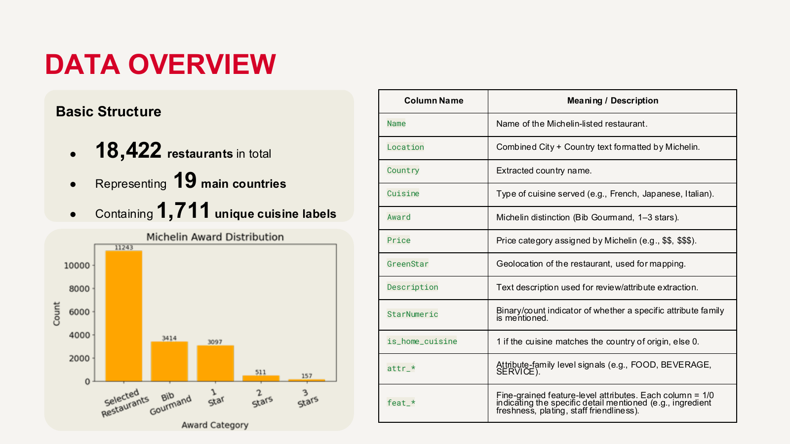
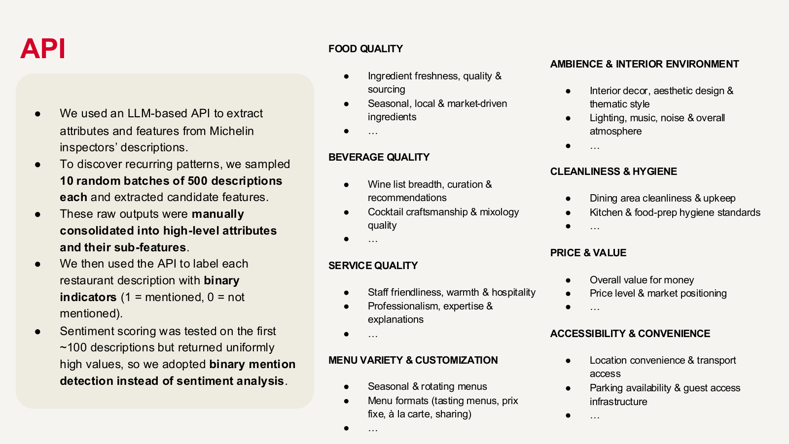
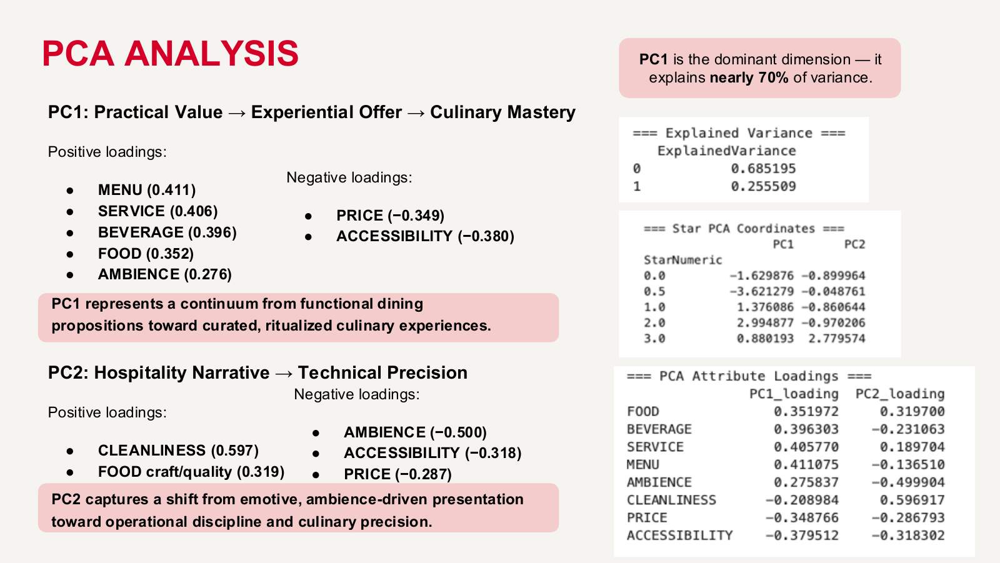

Skillset
19个国家18,422家米其林餐厅，三星和零星之间到底差在哪？
我设计了整套分析的taxonomy和提取pipeline。最初试了情感评分，发现走不通——米其林评审员从不写负面评价，sentiment分析直接失效——于是整个方法论转向了evidence-only提取加PCA降维。最终一个主成分（“实用价值到烹饪技艺”）解释了约68.5%的方差。结论：区分米其林层级的是食物和服务执行，不是氛围，不是价格。
展开看细节
使用 GPT-4.1-mini，设计 strict evidence-only prompt。原始 sentiment 方案因数据特性失效后 pivot 到 taxonomy-based extraction，单主成分解释 68.5% 方差。


